NovaCare — “불안을 안심으로 바꾸는, 가장 따뜻한 기술”
서비스의 모든 디자인 결정이 같은 방향을 보도록, 디자인 의도와 비주얼·UX Writing 원칙을 한 문서로 정리했다.
- 형식
- Figma Slides 23장 (2026.01.13)
- 역할
- 전략 수립부터 문서 작성까지 단독 작성
- 대상
- NovaCare — AI 시니어 돌봄 서비스
디자인 의도
시니어와 가족 모두가 느끼는 불안(Anxiety)을 기술적 안정성과 정서적 공감으로 줄여, 편안함(Comfort)과 안심(Relief)을 제공하는 것을 모든 디자인의 의도로 삼았다.
서비스는 일상의 시공간 모니터링으로 응급안전과 수면관리를 돕고, 나아가 생체정보 데이터로 각종 질환을 예방하는 토탈케어 플랫폼으로 정의했다.
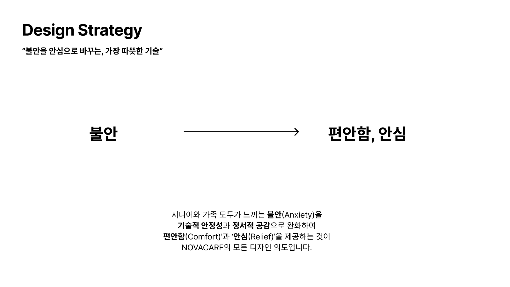
비주얼 원칙
이미지 톤
햇살 · 공기 · 식물 같은 자연의 요소로 신선함과 생명력을 전하고, 과한 연출 없이 자연 그대로의 질감과 색감을 유지한다.
형태
부드러운 곡선, 일관된 두께와 둥근 끝을 쓴 명료한 선, 누르기 쉽고 한눈에 구분되는 큰 버튼.
아이콘
기능이 아니라 의도(intent)를 전달하고, 둥근 형태 중심의 따뜻한 단순함으로 시니어 접근성을 높인다. 정적인 형태 대신 자연스러운 동작으로 생동감을 준다.
컬러
브랜드 그린은 안정·신뢰·회복을 뜻하는 “안심 시그널 컬러”로, 안정 상태 · 정상 리포트 · 긍정 피드백에 쓴다. 보조 팔레트는 그린의 차가움을 중화하는 따뜻한 장치다.
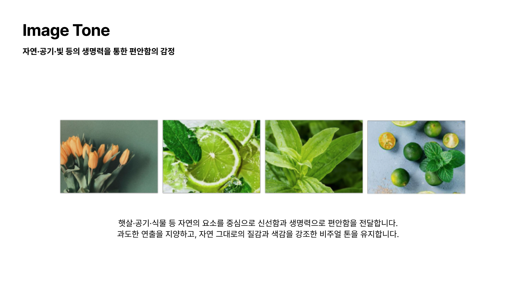
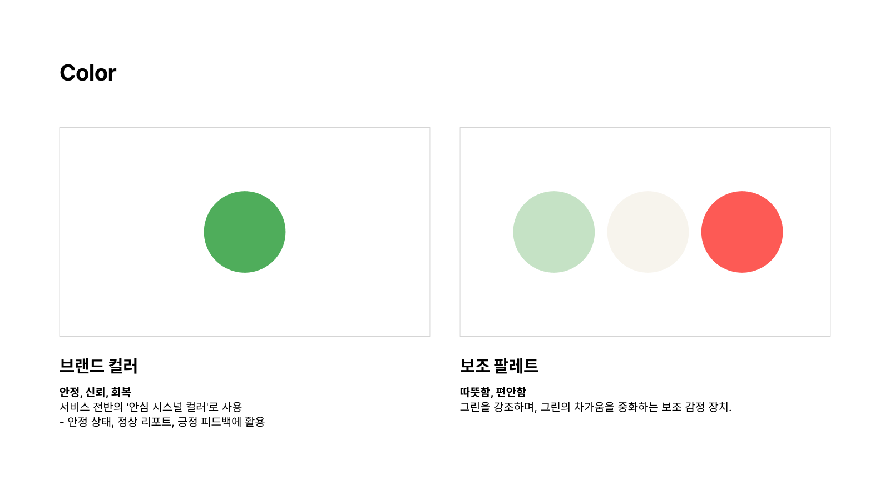
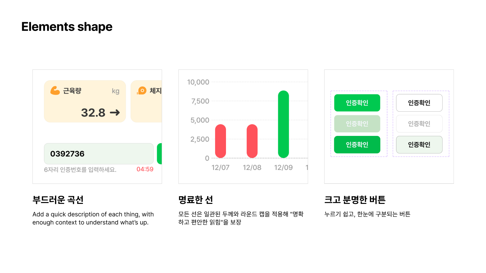
타이포그래피
Pretendard Medium과 Semi Bold 두 굵기로 제목(HD) · 본문(BD) · 캡션(CP) 스타일을 나누고, 행간은 글자 크기의 약 1.45배로 맞췄다. 본문은 38에서 26까지, 캡션은 22에서 18까지 단계를 두었다.
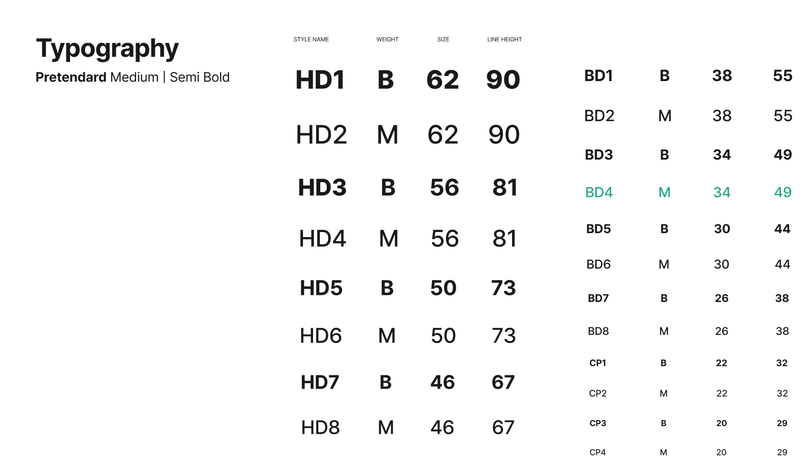
UX Writing 원칙
핵심 다섯 가지 원칙은 예측 가능, 차분함, 안심, 따뜻함, 존중이다. 시니어는 예측할 수 없는 문장에서 불안을 크게 느끼기 때문에, 다음에 무엇이 일어날지 먼저 알려주는 것을 첫 원칙으로 두었다.
Predictable — 예측 가능성
“지금 측정을 시작할게요. 약 5초 정도 걸립니다.”
Calm — 차분함
“지금은 안정적인 상태예요.” “천천히 하셔도 괜찮아요.”
Reassuring — 안심
결과보다 안심 메시지를 먼저 둔다. “지금도 안전하게 지켜드리고 있어요.”
Warm — 따뜻함
기계적 표현 대신 사람 같은 온기를 유지한다. “오늘도 잘 하고 계세요.”
Respectful — 존중
명령형 대신 제안형, 지시 대신 배려. “잠시 쉬어가시는 건 어떨까요?”
말투는 안정 · 따뜻함 · 존중 · 동반자성 네 축의 균형으로 잡았고, 한 문장은 “안심 → 정보 → 안내” 순서로 쓴다. 예) “지금 상태는 안정적이에요. 혈중산소는 정상 범위예요. 다음 측정을 원하시면 말씀해주세요.”
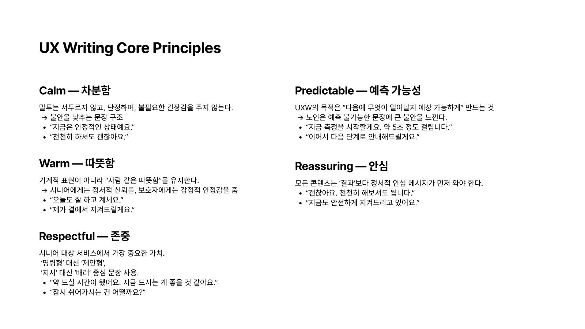
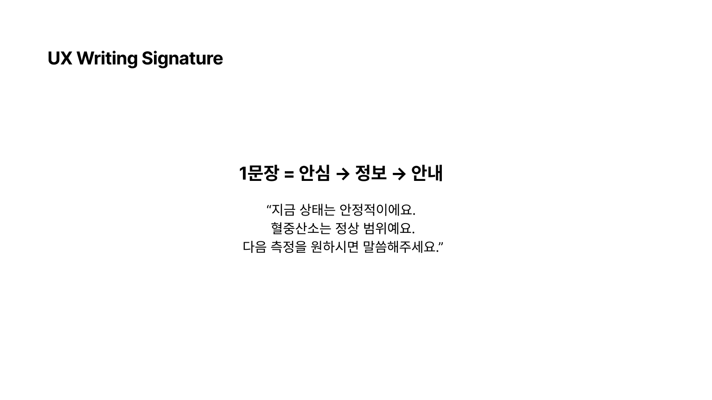
화면 유형별 프로토타입
원칙이 화면에서 어떻게 보일지 확인하려고 화면을 다섯 유형(데이터 · 미디어 A·B · 리스트 · 컨텐츠)으로 나눠 프로토타입했다. 실제 적용 화면은 NovaCare 케이스 스터디에서 볼 수 있다.
- 데이터
- 미디어 A
- 미디어 B
- 리스트
- 컨텐츠
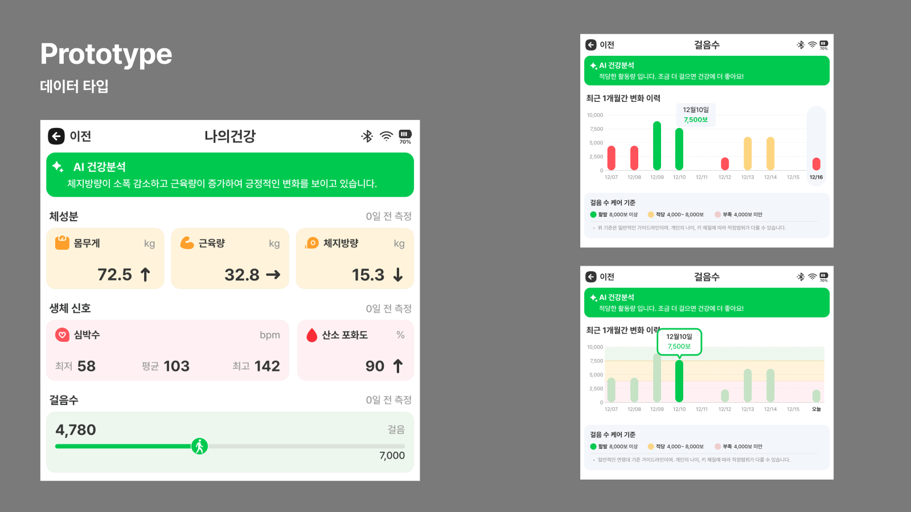
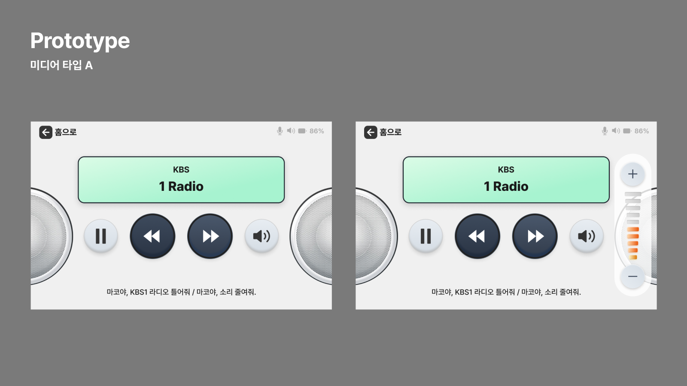
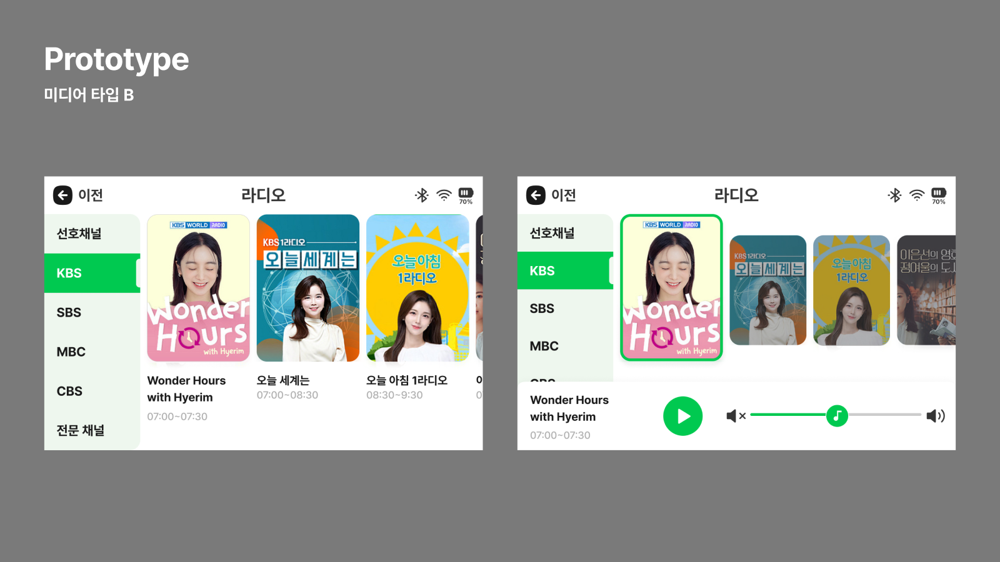
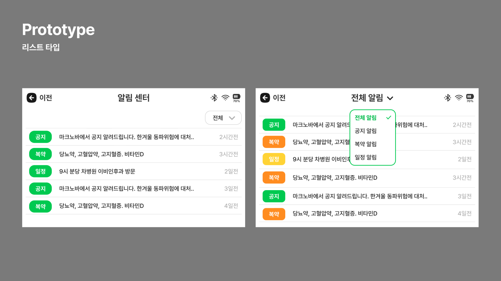
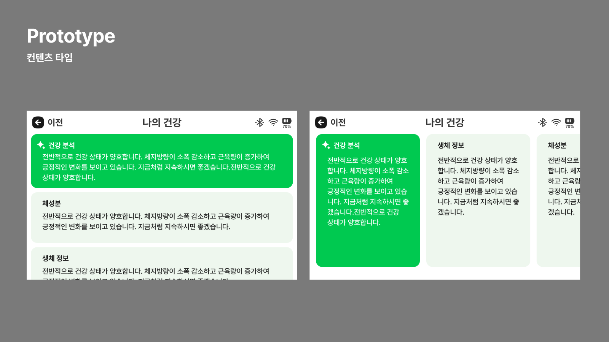
현재 상태
- — 아이콘 스타일의 세부 규칙과 일부 항목은 문서에서 “미정”으로 남아 있다.
- — 이 전략이 실제 화면에 적용된 모습은 NovaCare 케이스 스터디에서 확인할 수 있다.
- — 적용 후 사용성 지표는 측정 후 추가한다.